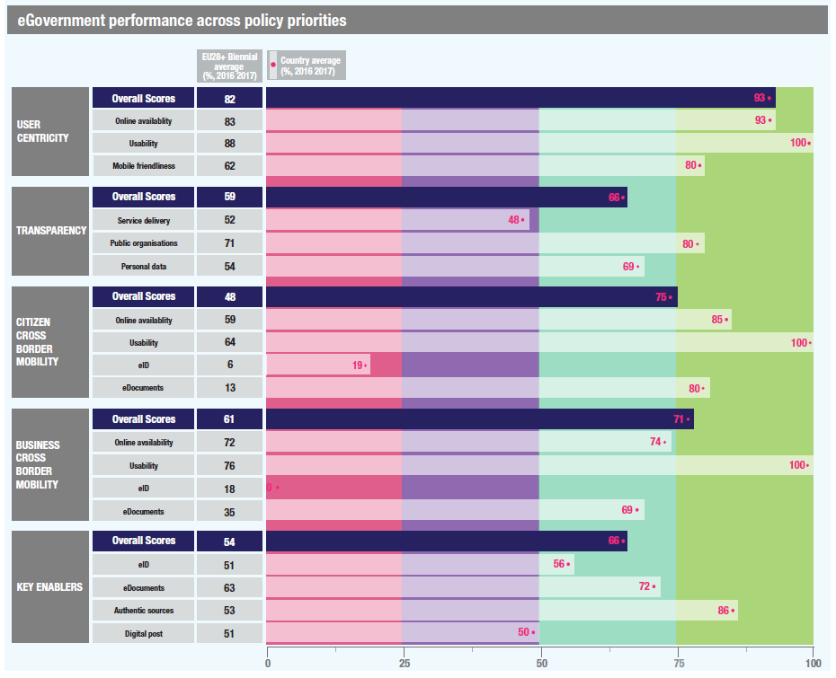

ISA2
Digital Government Factsheet 2019
Finland
ISA2
Digital Government Highlights 6
Digital Government Political Communications 7
Digital Government Legislation 11
Digital Government Governance 16
Digital Government Infrastructure 21
Digital Government Services for Citizens 29
Digital Government Services for Businesses 44
Population: 5 513 130 inhabitants (2018)
GDP at market prices: 233 555 million Euro (2017)
GDP per inhabitant in PPS (Purchasing Power Standard EU 28=100): 109 (2017)
GDP growth rate: 2.7% (2017)
Inflation rate: 1.2% (2018)
Unemployment rate: 7.4% (2018)
General government gross debt (Percentage of GDP): 61.3% (2017)
General government deficit/surplus (Percentage of GDP): -0.7% (2017)
Area: 338 400 km²
Capital city: Helsinki
Official EU language: Finnish, Swedish
Currency: Euro
Source: Eurostat (last update: 15 March 2019)
The following graphs present data for the latest Digital Government Indicators for Finland compared to the EU average. Statistical indicators in this section reflect those of Eurostat at the time the Edition is being prepared.
Percentage of individuals using the internet for interacting with public authorities in Finland | Percentage of individuals using the internet for obtaining information from public authorities in Finland |
Percentage of individuals using the internet for downloading official forms from public authorities in Finland | Percentage of individuals using the internet for sending filled forms to public authorities in Finland |
The graph below is the result of the latest eGovernment Benchmark report, which monitors the development of eGovernment in Europe, based on specific indicators. These indicators are clustered within four main top-level benchmarks:
These top-level benchmarks are measured using a life-events (e.g. mystery shopping) approach. Eight life events are included in the overall eGovernment performance score. Four of these life events were measured in 2013, 2015 and 2017 and the other four were measured in 2012, 2014, 2016, and again in 2018. The life events measured in 2017 were Regular business operations, Moving, Owning and driving a car and Starting a small claims procedure. The life events measured in 2018 are Business start-up, Losing and finding a job, Family life and Studying.

Source: eGovernment Benchmark Report 2018 Country Factsheet
Digital Government Political Communications
The Artificial Intelligence Programme was launched with the aim of steering Finland towards the age of AI, taking into consideration measures reaching far into the future and at the same time measures that are relevant today.
Digital Government Legislation
Three new pieces of digital legislation recently came into force:
Act on Providing Digital Services;
Act on Secondary Use of Health and Social Data;
Digital Government Governance
The law on a new Digital and Population Data Agency was approved and the new Agency will start in the beginning of 2020.
Digital Government Infrastructure
New digital infrastructure was put in place in Finland:
Third parties were granted the power to file taxes online.
The eAuthorisations service verifies a person’s or organisation’s authorisation to use digital services.
A semantic interoperability workbench was implemented.
Two new important registers have been created: incomes register and register of housing company shares.
Digital Government Services for Citizens and Businesses
Citizens can benefit from the following new services:
A new service for applying for and changing one’s driving licence.
The national study credit, degree and qualification disclosure service Koski brings together all study credits, degrees and qualifications stored in different data warehouses.
A new eHealth service, Omaolo, was launched.
Digitalisation of Public Services in the Government Programme
In the Programme of the Government, the goal for the next ten years is for Finland to make a productivity leap in public services and the private sector by grasping the opportunities offered by digitalisation, dismantling unnecessary regulation and cutting red tape. According to the Programme, public services are to be primarily digital.
As part of the implementation of the Programme, Prime Minister Mr Juha Sipilä and Minister of Local Government and Public Reforms Ms Anu Vehviläinen issued an open letter requesting proposals on how to contribute to digitalisation. More than 260 proposals from public administration, businesses, NGOs and citizens were submitted as a response to the letter.
In addition to, and as a part of the implementation of the Programme, the renewed principles for digitalisation were published in February 2016. The principles were directed at the public sector and municipalities whose work is related to processes modernisation through ICT. These principles were drafted in wide collaboration with stakeholders. They drew on good practices developed in Finland and abroad.
In order for services to become primarily digital, amendments to current legislation are needed. The Public Sector ICT has launched a process for renewing legislation to meet the demands required.
In 2017, the Finnish government adopted a roadmap to advance digital services. The roadmap entailed 112 services from different governmental agencies including for instance the ministries, the police, the public and private sectors.
Open Government Action Plan
The III Finnish Open Government Action Plan aimed to enhance citizen engagement. The themes for 2017-2019 included accessibility, transparency and. These three themes encompassed seven commitments for implementation:
Realisation of the commitments is monitored and evaluated during the implementation of the plan and after its finalisation.
Programme of Prime Minister Antti Rinne’s Government 6 June 2019
Antti Rinne was sworn in as Prime Minister on 6 June 2019, to lead Finland’s 75th government. The newly-formed government published its programme for its upcoming four-year term. The strategic themes of the programme are all-encompassing of the society and its needs, such as policy, housing, agriculture, health and youth.
Digitalisation also lies among the objectives, as quoted: “Finland will be known as a front runner in technological advances, innovative procurement and the culture of experimentation.” This will be achieved by better cooperation between the public and the private sectors in order to improve technology and digitalisation capabilities. In addition, the government aims to make all public services available digitally to individuals and businesses by 2023.
No political communication was adopted in this field to date.
No political communication was adopted in this field to date.
Cyber Security Strategy
The Finnish Government published the first national Cyber Security Strategy as a Government Resolution in January 2013. The strategy was drafted by the Defence and Security Committee, currently the Security Committee of Finland that is a permanent co-operation body for proactive preparedness.
Its task was to assist the Government and ministries. The strategy included ten strategic guidelines:
The national implementation programme of the Cyber Security Strategy was published on 11 March 2014. It consisted of 74 activities. The main focus of the implementation programme involved:
The Cyber Security Centre;
The Central Government 24/7 Information Security Operations;
The security network for encrypted data transfer and administration;
Police capabilities for responding to cybercrime;
Legislation associated with the cyber domain and cyber security;
Research and education programmes, and the improvement of other competence.
No political communication was adopted in this field to date.
No political communication was adopted in this field to date.
Government Report to Parliament on Spatial Data Policy
The Finnish Parliament approved the Government’s Report on Spatial Data Policy in November 2018. The Spatial Data Policy report explains what kind of location information is needed in society and how to develop, manage and distribute it, as well as promoting their use.
Prime Minister Sipilä’s Government Programme
Prime Minister Juha Sipilä’s Board of Directors’ programme was presented in 2015. The programme and its annexes offered a strategic change programme. Various administrative sector development projects continue to grow.
Social and health information systems were integrated in the areas responsible. The overall architecture was developed and monitored at the national level to ensure interoperability of the national service path.
Artificial Intelligence Programme
The work was launched on 18 May 2017, commissioned by Minister of Economic Affairs Mika Lintilä. In connection with this, five tasks were specified for the Artificial Intelligence Programme:
Government Report of 2018 to Parliament on Information Policy and Artificial Intelligence
Information and data key components in digitalisation and especially in the applications of artificial information. There have arisen a number of legislative and ethical questions and issues. Yet government policy measures lacked central cohesion. As a result, in December 2018 the Government submitted a report to Parliament on Information Policy and Artificial Intelligence.
The report highlighted several policy issues with a particular focus on the ethics of information policy and artificial intelligence. The report marked the beginning of a new and more cohesive policy response to digital government. The report sought to:
Formulate a common and comprehensive information policy, tapping into the information principles in place in different fields and the measures taken on the basis of experiences.
Build a knowledge society that is sustainable both in terms of human wellbeing, safety and security and with regard to the economic, social, cultural and environmental dimensions.
Clarify information policy guidelines and principles so as to create a foundation for measures aimed at strengthening the competitiveness and decision-making capacity of Finland, businesses operating in the country and other social actors.
Build Finland up as an attractive operating environment for the data economy.
Form Finland’s position, on the basis of which Finland will make pioneering efforts to influence the international operating environment, commitments and regulatory framework relating to the use of information.
Consolidate the ethical values at the core of making information policy choices and developing artificial intelligence, including fundamental and human rights, social inclusion, responsibility, trust, safety and security.
Promote the ability to analyse, anticipate and respond to threats in a changing operating environment.
The Parliament approved the report in March 2019 with few statements. The Parliament obliged the Government to continue its work on ethical principles on information policy and artificial intelligence to formulate them in more concrete. The Parliament also required Government to take necessary actions to increase citizens understanding on digitalisation and artificial intelligence and strengthen the human competence in these matters at different educational degrees and in different branch of sciences.
Act on Public Administration Information Management
A new Public Administration Information Management Act was prepared, which included the regulation of public administration information management. The new general law defined the entire lifecycle of information in public administration. Initially, the areas covered were design and imaging duties, information security requirements, the basics of case and service management registration, as well as provisions for the retention and archiving of data. For example, as the project progressed, archiving changes were omitted.
The reform intends to ensure consistent management of the authorities' data sets and secure data processing. The purpose was to improve information management so that the authorities could provide their services in accordance with good administration and perform their duties effectively. In addition, the goal was to promote interoperability between information systems and data resources.
The new Act will replace the Act on the Administration of Information Management in Public Administration and in total over thirty legislative acts were modified in the reform process. The changes will take effect on 1 January 2020. In the reform process, it was decided to set up a Public Administration Information Management Board, which will work within the Ministry of Finance.
Act on Government’s common ICT-services
The purpose of the Act on Government’s common ICT-services (1226/2013) was to improve the efficiency, quality and interoperability of the common ICT service in government offices. The Act clarified the organisational structure and implements a new organisation: ICT Center Valtori. Valtori is responsible for providing and producing common ICT services like data centres, networks, workstations and communication services. The scope of Valtori’s services also includes support for eServices and generic software services. The government organisations are still responsible for the development operation and support for the business specific software.
Act on Shared Support Services for eGovernment
The Act on Shared Support Services for eGovernment (571/2016) along with the Ministry of Finance’s “Decree on providing certain shared support services for e-Government (607/2016)” entered into force on 15 July 2016. In the Act on Shared Support Services for eGovernment, the current responsibilities for providing support services for eGovernment were specified, so that they were in accordance with the national architecture for digital services.
The Programme on the National Architecture for Digital Service was completed in December 2017. The programme resulted in a new major eService, Suomi.fi, which provided services to citizens, businesses and government organisations. The programme provided a new Data Exchange Layer (Palveluväylä) which was based on Estonian X-Road technology. The programme also produced, among other things, a new messaging service with citizens, a new eID-service, and an e-Authorisation service.
The purpose of the Act was to improve the availability, quality, data security, interoperability, steering of public services and to promote the effectiveness and productivity of public administration.
The Act provided:
For shared support services for eGovernment;
The requirements that apply to them;
The tasks related to providing them;
The processing of personal and other data related to their provision;
For the right and obligation to use the shared support services for eGovernment;
The prerequisites for using the support services.
Act on the Provision of Digital Services
The purpose of the Act on the Provision of Digital Services is to promote access to digital services thus improving everyone's access to digital services on an equal basis. Furthermore, the purpose is to promote quality and information security of public administration digital services. This law implements Directive (EU) 2016/2102 of the European Parliament and of the Council on the accessibility of websites and mobile applications of public sector bodies, referred to as the Accessibility Directive.
Act on the Openness of Government Activities
The Act on the Openness of Government Activities (with amendments up to 1060/2002 included) provided for a general right to access any official document (including electronic records) in the public domain held by public authorities and private bodies that exercise public authority. Those requesting information are not required to provide reasons for such a request or to verify their identity unless they are requesting personal or other confidential information. Replies have to be made within 14 days.
Restrictions existed for example for: non-official documents; documents relating to foreign affairs; criminal investigations; the police; military intelligence and armed forces; as well as confidential business activities.
Finland was chosen to implement Directive 2003/98/EC on the re-use of public sector information (PSI) by amending the Act on the Openness of Government Activities.
Act on Electronic Services and Communication in the Public Sector
The objective of the Act on Electronic Services and Communication in the Public Sector (924/2010) was to improve the efficiency of services and communication, as well as information security in the Public Administration, judicial bodies and enforcement authorities by promoting the use of electronic data transmission. It contained provisions on the rights, duties and responsibilities of the authorities and their customers in the context of electronic services and communication.
Act on Strong Electronic Identification and Trust Services
The Act on Strong Electronic Identification and Electronic Signatures entered into force on 1 September 2009. It was amended by including rules on the trust network of identification services and adapting national legislation to align with the requirements of the EU legislation on electronic identification and trust services. The amendments on the trust network of identification services became applicable in May 2017. The Act on Strong Electronic Identification and Trust Services (2009) was founded on the principle that users must be able to trust information security and protection of privacy when using electronic identification services. The Act's objective was to create common rules for the provision of sound electronic identification services, and to promote the provision of identification services and the use of trust services.
Act on Public Administration Information Management
Since the entry into force of the General Data Protection Regulation, the Personal Data Act (1999) was repealed and several changes were made to the national legislation governing processing of personal data.
The new Act on Public Administration Information Management contained the general regulations on information security requirements for handling public sector information.
Act on Government Security Network Activities
The purpose of the Act on Government Security Network Activities is to ensure, under normal circumstances, disruptive situations under normal circumstances and exceptional circumstances, the disruption-free functioning and continuity of communication between the state leadership and the key security authorities as well as other actors, and to secure the availability, integrity and confidentiality of information required for decision-making and leadership.
The Act applied to the Government Security Network, the use of its services, and other security network activities. The security network is a state-owned and state-controlled public authority network referred to in the Information Society Code (917/2014) that fulfils the requirements for high preparedness and security stipulated by legislative provisions or regulations implemented pursuant to legislation. The security network comprises the communications network and directly related IT areas, hardware and other infrastructure, as well as the security network’s shared services.
The Ministry of Finance is responsible for the steering and supervision of security network activities and its service provision with respect to their general administration, strategy, finances, information and communications technology preparedness, readiness and security.
Act on the Information Management Governance in the Public Sector
The Act on the Information Management Governance in the Public Sector (634/2011), in Section 10, referred to authorities in public administration who organise their activities in such a way that they use the information deposited in the information systems if their activities require use of this information.
Act on Population Information System and the Population Register Centre’s Certificate Services
The Act on Population Information System and the Population Register Centre’s Certificate Services (661/2009) defined the Population Information System as a general nationwide computerised basic register, which contained the information of persons, real estate, buildings and apartments, as well as administrative and other similar regional divisions. Basic information related to the identification of people and buildings is registered in the Population Information System. Personal data recorded in the system includes for example name, personal identity code, address, citizenship and native language, family relations and date of birth and death (if applicable). Building data registered includes the building code, location, owner, area, facilities and network connections, intended use and year of construction. Real estate data registered includes the real estate unit identifier, owner’s name and address, and buildings located on the property.
The Population Information System is maintained by the Population Register Centre and local register offices. At the beginning of 2020, Population Register Centre and local register offices will be merged and a new Digital and Population Data Services Agency will start its operations as a national agency. In future, there won’t be any local register offices.
Registration of information is based on statutory notifications made by private individuals and public authorities. The information in the system is used throughout Finnish society’s information services and management, including in public administration, elections, taxation, judicial administration, research and statistics. Businesses and other private organisations can also gain access to the information.
Acts on Public Procurement
The new acts on public procurement are the Act on Public Procurement and Concession Contracts (1397/2016) and the Act on Procurement and Concession Contracts by Entities operating in the Water, Energy, Transport and Postal Service Sectors (1398/2016).
A new Act on Public Procurement was approved in December 2016 and it came into force on 1 January 2017. The new legislation was based on the EU public procurement directives replacing the previous national procurement legislation from 2007. The new legislation provided contracting authorities with better possibilities to make procurement more innovative, sustainable, responsible and of higher quality. Another objective for the new legislation was to reduce the administrative burden created by the tendering process for both contracting authorities and tenderers, by increasing the national threshold values and reducing the requirements of the procurement procedure.
eInvoicing Legislation
The public procurement process area is one of the key development areas in the Government Financial Administration Strategy for 2014-2020. The eInvoice function is currently provided by the government free of charge.
The Act on Electronic Invoicing for Contracting Entities and Traders implements Directive 2014/55/EU of the European Parliament and of the Council on electronic invoicing in public procurement, however, the law does not apply if the use of an electronic invoice could reveal confidential information or compromise the essential security interests of the state.
Act on Secondary Use of Health and Social Data
The purpose of the Act on Secondary Use of Health and Social Data is to facilitate the effective and safe processing and access to the personal social and health data for steering, supervision, research, statistics and development in the health and social sector. A second objective is to guarantee an individual’s legitimate expectations as well as their rights and freedoms when processing personal data.
The Act will facilitate:
The elimination of overlapping administrative burden related to the processing of permits.
The smoother and faster processing of permits.
The smoother collation of data from different registers.
The easier and more efficient use of valuable social and health materials in research and development activities.
Clearer knowledge management by service providers and parameters for this.
The National Institute for Health and Welfare’s data access rights and the legislative basis for the national registers that the institute is responsible for will be adjusted so it is in accordance with the requirements in the general data protection regulation.
Act on Public Administration Information Management
In the above-mentioned Act on Public Administration Information Management, there is a requirement for government agencies to utilise datasets of other government agencies whenever possible, if they by law have access to such data via electronic interfaces. Regular exchange of data between agencies has to be organised via electronic interfaces.
The Act also prescribes to the Ministry of Finance a general coordination task of interoperability of public sector data sets. The act will enter into force 1 January 2020.
No political communication was adopted in this field to date.
Ministry of Finance / Public Sector ICT Department
eGovernment is an integrated part of Government reform under the responsibility of the Ministry of Finance. The Ministry is tasked with policy-making and the development and guidance of State IT operations. In April 2011, a decree came into force which reinforced the Ministry’s task in the steering of functions related to ICT. To this effect, the Public Sector ICT Department under the state secretary of the Ministry of Finance was created by merging the three existing units at the time.
The newly-formed Public Sector ICT, which is operational since April 2011, is responsible for the overall development of eGovernment, Public Administration information management, corporate data and information management governance in central Government. This strategic unit also formulates joint functional solutions and methods and is in charge of the overall development of information security in Public Administration, as well as data security governance in central Government. The Public Sector ICT department is divided into three units: Digitalisation, Information Policy and Cyber Security and Infrastructure.
Anna-Maija Karjalainen Director General, Public Sector ICT
Contact details: ICT-Director Public Sector ICT Ministry of Finance Snellmaninkatu 1A, Helsinki PO Box 28 FI-00023 Government Finland E-mail: anna-maija.karjalainen@vm.fi Tel.: + 35 82 95 530 165 |
Ministry of Transport and Communications
The responsibilities of the Ministry of Transport and Communications include legislation related to infrastructure, i.e. communications networks, data protection and data security questions. The Communications Policy Department, rooted within the Ministry, is divided into two units. The Communications Networks Unit prepares laws and other strategic guidelines related to frequencies and network licences, broadband connections, information security and critical infrastructure protection. The Media and Communications Services Unit is responsible for issues related to information society projects and privacy protection of communications.
Advisory Committee on Information Management in Public Administration (JUHTA)
JUHTA, an advisory board appointed by the Ministry of Finance, is responsible for promoting cooperation in information management between the State and the municipalities. The Committee coordinates the development of information technology, information management and electronic services in central and local government and draws up relevant recommendations for the public administration. Currently, the mandate of JUHTA has been extended to the end of 2019.
Advisory Committee on Government Security Network
The Ministry of Finance is supported in the steering and supervision by the advisory board for security network activities set by the government for a fixed term. The advisory board is led by the Ministry of Finance with representation from at least the Ministry of Finance, the Prime Minister’s Office, the Ministry for Foreign Affairs, the Ministry of the Interior, the Ministry of Defence, the Ministry of Transport and Communications, the Ministry of Social Affairs and Health, the Finnish Defence Forces, the National Emergency Supply Agency and the Association of Finnish Local and Regional Authorities. The advisory board’s task is to participate in the preparation of decrees, orders and decisions issued based on the provisions contained in the Act on Government Security Network activities and other matters related to steering and supervision of security network activities.
The Development and Coordination Committee of Information Management (TIETOKEKO)
The Committee aims to coordinate ICT policies. It offers advice on such issues as the drafting of government-wide ICT strategies and supports the development of knowhow and exchanges good practices and information to name a few. The committee is chaired by Government CIO of Public Sector ICT and members are CIOs or equivalent officials of ministries in the field of ICT. Also, the Parliament has a member in the committee.
Public Sector Digital Security Management Board (VAHTI)
VAHTI was reappointed with some modifications for the 2017-2019 term in December 2016, by the Ministry of Finance. The new VAHTI structure identifies five main areas of work: management and risk management, business continuity management, security in development, security maintenance, and monitoring and evaluation. VAHTI provides a forum for cooperation and coordination among government organisations in charge of the development and steering of information security and data protection. Different administrative branches and levels of administrations are represented in VAHTI. VAHTI issues information security instructions, policy guidelines, that are important reference materials for the public authorities. VAHTI instructions are also utilised and referenced outside the government organisations in e.g. municipalities and private sector.
Government ministries and agencies
Government ministries and agencies are responsible for the implementation of their own departmental eGovernment projects.
Government ICT Centre Valtori
Government ICT Centre Valtori is a service centre operating under the administrative purview of the Ministry of Finance. It provides sector-independent ICT services for central government administration.
Public Sector ICT
Public Sector ICT formulates joint functional and technical solutions and methods and is in charge of overall development of information security in the public administration, as well as data security governance in central government.
Government ICT Centre Valtori
Government ICT Centre Valtori is a service centre operating under the administrative purview of the Ministry of Finance. It provides sector-independent ICT services for central government administration.
Digital and Population Data Services Agency
At the beginning of 2020, the new Digital and Population Data Services Agency (Finnish Digital Agency) will begin its operation in Finland. It was established by the Act on the Digital and Population Data Services Agency (304/2019). The agency will be created when the Population Register Centre, local register offices and the Development and Steering Unit for the Local Register Offices operating under the Regional State Administrative Agency for Eastern Finland are merged into a single agency. The Digital and Population Data Services Agency will promote the digitalisation of society, secure the availability of information and provide services related to customers’ life events.
National Audit Office (NAO)
The NAO is Finland's supreme audit institution and reports directly to the Parliament. It audits the State's finances and asset management in order to ensure that public funds comply with related legislation.
Office of the Data Protection Ombudsman
The Office of the Data Protection Ombudsman guides and controls the processing of personal data and provides related consultation. It exerts power on issues related to the implementation of the right of verification and the correction of personal data. Furthermore, the Ombudsman follows the general development in the processing of personal data, launching initiatives where necessary.
Regional Councils
Regional Councils are joint municipal authorities responsible for regional development. A key task is to create a development strategy for a respective region. This scheme constitutes a region's fundamental strategy document.
Advisory Committee on Information Management in Public Administration (JUHTA)
The Committee coordinates the development of information technology, information management and electronic services in central and local Government.
Regional Councils
Regional Councils, which are joint municipal authorities responsible for regional development, implement a general regional policy. There are 19 Regional Councils grouping together the country's 342 municipalities.
Association of Finnish Local and Regional Authorities (AFLRA)
AFLRA's objective is to promote the opportunities for local authorities to operate, cooperate and encourage their vitality for the benefit of residents. The services provided span all areas of municipal operations, including local and regional government development, the information society and social and healthcare services.
Government ICT Centre Valtori
Government ICT Centre Valtori is a service centre operating under the administrative purview of the Ministry of Finance. It provides sector-independent ICT services for central government administration.
No responsible organisations were reported to date.
National Audit Office
National Audit Office will carry on auditing on central government regional offices and usage of central government subsidies at regional and local governments (municipalities).
Office of Data Protection Ombudsman
The mandate of the Office of Data Protection Ombudsman covers also regional and local governments.
Suomi.fi Web Service for citizens, organisations and companies
Suomi.fi Web Service is a national service for citizens, entrepreneurs and officials. It brings together information and services relating to public services for citizens and businesses at a single address. It provides, for example, official electronic services, forms, and information on municipal services.
Web Service offers the following content:
Suomi.fi Services contains information and services for different life events and situations in a company.
Suomi.fi Finnish Service Catalogue is a national, centralized data resource where citizens and companies can find information about public services and service channels. It is mandatory for public organisations to update information about their services in Service Catalogue, while private and 3rd sector organizations have a right to do so.
Suomi.fi e-Authorizations is a centralized authorization register. Citizens and companies can authorize another person or company to take care of things on their behalf. Digital authorization is valid when using web services. Later on it will also function in offices and customer service points. In the future, a growing number of organizations will enable digital authorization.
Suomi.fi Messages is a secure channel for electronic communications, decisions and messages between authorities and citizens or authorities and companies and enterprises.
Suomi.fi Registers contains information in the registers of different authorities. After identification, citizens and companies can view and verify their own data in the public register like population, real estate and vehicle.
Suomi.fi Maps provides contact and information for public sector service locations, which is easily integrated into different web-services.
Suomi.fi Payments enables easy and secure payments in public services.
Demokratia.fi: eParticipation portal
Demokratia.fi is a portal that gathers together information from various democracy-related sites and news in the field of political decision-making. The site thereby makes it easier for citizens to find the best channels for participation and influence, and increases government transparency and interaction. The portal summarises eDemocracy web services maintained by the Ministry of Justice, namely lausuntopalvelu.fi, otakantaa.fi, nuortenideat.fi, and kansalaisaloite.fi. Demokratia.fi also contains links to other public authorities’ websites with information on current matters that are being planned or prepared. In addition, it highlights the latest news from, for example, the parliament and the government.
Paikkatietoikkuna.fi: Geodata portal
Paikkatietoikkuna is a national portal presenting the spatial data produced and exploited in Finnish society. It is based on open source software and it offers the opportunity, through a map window, to browse dozens of map levels, produced by different organisations, on different themes, such as terrain, soil and land use, as well as traffic network.
Opendata.fi: Open data and interoperability tools
Opendata.fi is a service for sharing open data and developing interoperability of public administration organisations. Opendata.fi is available for all audiences who want at making use of open public information resources. Companies and citizens are allowed to store open data into the service. The service contains metadata of open datasets and also interoperability tools, descriptions and guidelines.
Job Market Finland
Job Market Finland (Työmarkkinatori) is an online service for the working life. It brings together work and competence, and the public and private actors. It is the entity of employment service platforms to help fill job vacancies and enable finding employment opportunities. It also provides services and information about situations of work life.
Kampus: Government intranet
Kampus is a common platform for sharing information between ministries. It also provides access to all internal services related to among other things human resource management, internal data sets and archive, government projects and also government travel services. As the Government’s intranet information directory, it provides access to internal and external Government and Parliament information.
Pilot projects
There have been pilot projects on MyData in the areas of transport and education.
At the local and regional government level there has been experiments on the usage of personal information in the social and healthcare sector.
X-tee
Finland and Estonia have set up a joint institute to develop X-tee technology (used in the Finnish Data Exchange Layer called Palveluväylä).
eID ecosystem in Finland
Main stakeholders related to eID ecosystem in Finland:
Ministry of Transport and Communication: legislation on eIDs and trust services.
Transport and communications agency Traficom: supervision of eID-providers.
Ministry of Finance: steering of Population Register Centre, eID policy guidelines for public sector.
Population Register Centre: management of the national eIDAS node, the public sector eID portal (Suomi.fi e-Identification) and the national ID card.
Private sector identity providers: There are currently 13 private sector identity providers (banks and mobile operators).
In 2018, authentication for public sector eGovernment services was dominated by bank issued eID-means by 95%. The use of the national ID card for online authentication is limited to only 1%. The remaining 4% are eIDs issued by mobile operators.
Population Register Centre (PRC)
The PRC is responsible for issuing electronic identities and certificates. It creates an electronic identity (eID) for Finnish citizens when providing them with a personal identity code. The electronic client identifier is used for electronic user identification in secure online transactions. It is a dataset consisting of a series of numbers and a check character that helps identify Finnish citizens and foreign citizens permanently residing in Finland who are entered in the Population Information System. The PRC is currently the only certificate authority for qualified certificates in Finland able to issue Pan-European certificates that provide high levels of information security and contain the correct identity.
The Population Register Centre is the responsible eIDAS node operator in Finland. Finnish national eIDs exist on two levels of assurance; eIDAS high and eIDAS substantial. However, only the eID cards issued by the Population Register Centre have been evaluated as being equal to eIDAS level of assurance High. The Population Register Centre acts as a central actor for bankID and mobile certificates contracts for public sector.
FINeID
FINeID is the Population Register Centre's certificate system, which is based on Public Key Infrastructure and provides the PRC's certificate products and services. The system enables the realisation of privacy protection and information security, which is a basic right of citizens and an absolute requirement for online service providers. FINeID offers an array of Certification Authority Services:
Citizen Certificate
The Citizen Certificate is an eID used for safe online services, containing a citizen’s first name, surname and an electronic client identifier, among other information. It identifies and encrypts emails and documents. In addition, it provides eSignatures and can be attached to the ID card. Electronic transactions made with the certificate are secure. Electronically signed documents are equal in all legal respects to traditional signatures. Every personal certificate issued by the Population Register Centre (PRC) is a qualified certificate, and is placed in a public directory.
Organisation Certificate
Organisation Certificates are used to verify a given person's identity as a representative of a business, organisation or associated group. These certificates also make it possible to provide an undisputed electronic signature as defined by law and to provide authentication of network users and their access rights. They can also include an organisation's valid email address.
Server Certificate
The Population Register Centre (PRC) issues server certificates that can be used for identifying public sector services. Utilising a server certificate enables the user of a service to verify the authenticity of the service provider.
Civil Servant Identity Card
Chip ID cards for public sector employees were adopted throughout central Government in October 2006. The photo ID cards contain a qualified certificate enabling: identification in order to log into information networks; authentication of network users and their usage rights; encryption of email and other documents; and the provision of a binding and undisputable electronic signature, as specified by Finnish legislation. These certificates can also be used for access control systems, teleworking, passage control and physical identification.
Suomi.fi: Citizen Identification Services
Suomi.fi eIdentification enables the citizens of Finland and (in the future) the European Union to be recognised in a safe way by using various eIDs such as bank-ID and mobile certificates. The service offers one common technical interface for all public and private eID means against public sector eGovernment services.
eAuthorisations
eAuthorisations is a service for reliable verification of a person’s or organisation’s authorisation and right to use digital services on behalf of another person or organisation regardless of time or place. The service provides mandates for all possible business cases and scenarios and their use cases, depending on which services the mandate is being used for. Suomi.fi eAuthorisations service is run centrally by Population Registry Centre and the service is available without costs for public and private sector organisations.
Business Information System (BIS)
Business Information System (BIS) is a service jointly provided by the National Board of Patents and Registration and the Tax Administration which allows users to submit information simultaneously to both organisations. Businesses and other organisations can lodge their details using a single notification form to both authorities, thus avoiding duplication. It includes businesses and other organisations entered in the Trade Register, Register for Foundations, VAT Register, Pre-payment Register, Employer Register or the Tax Administration Client Register, as well as all businesses and organisations which have filed a start-up notification but have not yet been entered in the above-mentioned registers.
All businesses and organisations included in the BIS are assigned a Business Identity Code (Business ID) which has replaced all previous identifiers. The Business ID is provided as soon as the start-up notification has been submitted. BIS also provides a real time, free-of-charge information service which enables users to access information on Finnish-registered businesses, organisations and foundations, including contact details and Business IDs. In addition to finding information on individual businesses, the BIS service is useful for those in the process of selecting a name for a new business or changing the name of an existing business. Information is available on both current and dissolved businesses.
Current status
eProcurement is decentralised and the process sub phases are not provided on a single national platform. Privately-owned specialised platforms exist for the eInvoicing post-award phase. The visibility on the authorities’ websites is well above the EU27+ average[1].
In 2017, a new service on government spending on procurement was opened, Tutki Hankintoja. The service offers citizens and companies information about government spending on procurement. Citizens are able to search information about state purchases and how public funds are spent.
Central Procurement Unit
Hansel Ltd. is a State-owned public procurement enterprise that acts as a central purchasing body for Government entities, providing a full set of eProcurement tools and services to the public sector. The procurement online service that it offers and manages consists of a notification database service for ongoing public tenders. This database service is mandatory for ongoing public tenders. A private eInvoicing platform offers value-added services for the notification database. The value-added services include the registration of users for the permanent follow-up of the incoming notifications and orders for tender.
The website's status was strengthened after the Ministry of Finance started to implement its public procurement strategy for 2010 by conducting all ICT procurements through Hansel.
HILMA notification service
The HILMA notification service is a platform aimed at the eNotification of national calls for tenders. Since the entry into force of the new Public Procurement Act in 2007, the use of HILMA has become compulsory for contracting authorities in cases where national thresholds are exceeded.
eInvoicing platforms
Economic operators can submit eInvoices to contracting authorities through their own accounting software or via the two following platforms:
The Ministries have received electronic invoices for several years.
Suomi.fi: Maksut
All payments in the Finnish Government are electronic. The payment system has recently renewed as Suomi.fi maksut (payments). The responsible organization is State Treasury.
Senaattori: Government intranet portal
Senaattori, the Finnish public authorities’ intranet, is a joint interactive tool for knowledge management and a database that supports work processes, innovation, interaction, learning and cooperation. It is based on smooth technology and standardised solutions. In addition, it constitutes a coordinated whole with Government and Parliament web services (i.e. intranet, extranet, Internet) and with joint internal systems.
Semantic interoperability platform
The interoperability platform gives users the tools and the method for specifying and managing interoperable data and information content. The platform consists of the terminologies, code lists, and data models needed for flows of data and in other forms of information management. The interoperability method will help users create and maintain the semantic interoperability of information, i.e. data processing where meaning in flows of data remains the same. The interoperability platform is intended for both public administration and the private sector. The tools are available free of charge for creating and editing terminologies and concepts, managing code lists, and creating and editing data models. Data content producers are responsible for their own data specifications and their quality, and for keeping them up to date. Users can also use previously created data specifications that are available on the interoperability platform. Using existing code lists and data models in the user’s own system development is cost-effective and improves interoperability between the systems of different actors. The consistent use of concepts makes services easier to plan and understand
Memorandum of Understanding
The Memorandum of Understanding engages the Estonian and Finnish governments into co-operation, with specific defined areas:
Estonia’s X-Road’s source code will be implemented for practical use in Finland as a national data exchange layer.
Finland and Estonia will cooperate in the development of future versions of the X-Road platform and the Finnish national data exchange layer.
Cross-border cooperation will be advanced in multiple fields of digital society, economy and government.
The Participants will share with each other information that is relevant to achieving the objectives.
Population Information Register
The Finnish Population Information System is a computerised national register that contains basic information about Finnish citizens and foreign citizens residing permanently in Finland. Also recorded is information about buildings, construction projects, residences and real estate. The Population Information System is the most-used basic register in Finland.
The Population Information System is maintained by the Population Register Centre and local register offices. Registration of information is based on statutory notifications made by private individuals and public authorities. The information in the system is used throughout Finnish society’s information services and management, including in public administration, elections, taxation, judicial administration, research and statistics. Businesses and other private organisations can also gain access to the information.
Register of Associations
The Register of Associations is maintained by the Finnish Patent and Registration Office. Freedom of association is one of the basic political rights guaranteed in the Finnish Constitution. Within the register, there are free search options for basic information as well as eService options such as basic notices, notices of rule amendments, notices of dissolution, and changes of persons signing for your association. Also changes of address can be submitted online.
Trade Register
The Trade Register contains information on traders and businesses:
Majority of businesses are limited liability companies and private traders;
Official details of businesses all over Finland;
All businesses have to be registered at the trade register;
Most businesses must also submit their financial statements (annual accounts) to the register;
Joint notification procedure and an information service with the Finnish tax administration (bis).
The Trade Register is maintained by the Finnish Patent and Registration Office.
The Register for Foundations
The Register for Foundations, maintained by the Finnish Patent and Registration Office, has information about foundations, their by-laws and financial statements. Citizens can order copies of documents enclosed with applications or notifications to the Register of Foundations. Some documents, such as balance sheet specifications enclosed with financial statements, are not publicly available.
Land Information System
The Land Information System is maintained by the National Land Survey of Finland. It contains attribute data related to property and information about mortgages and registrations of title to property as well as other property information.
Business Information System (BIS or YTJ in Finnish)
The BIS is jointly maintained by the Finnish Patent and Registration Office (PRH) and the Finnish Tax Administration. Information reported through BIS is forwarded when needed to the:
Trade Register;
Register of Foundations;
VAT Register;
Prepayment Register;
Employer Register.
The most common user cases are:
Start or close down a business or an organisation;
Report changes;
Search for basic details of companies and organisations;
Some of the notifications are available as eServices, some must be filed using paper forms.
The Topographic Data System
The Topographic Data System is maintained by the National Land Survey of Finland. It depicts the terrain of all of Finland, is used in the production of other map products and in various optimisation tasks. Aerial photographs, scanning data and data provided by other data providers are utilised in updating the Topographic database. The updating is done in close cooperation with the municipalities. Field checks in the terrain are also needed to some extent, mostly as regards the classification of features.
Digiroad
The Digiroad is a national database that contains the geometry of the Finnish road and street network featured with the most important road attribute data. It provides a comprehensive and up-to-date description of the Finnish road and street network online. The data enables and supports the development and commercialisation of services and applications for, for example, route planning, navigation, tourism, and intelligent transportation systems (ITS) purposes. The Digiroad data is open for everyone to use since 2004.
The service is maintained by the Finnish Transport Agency (FTA) Liikennevirasto. Municipalities and the Regional centres for economic development, transport and environment (ELY) take care of the data administration in co-operation with the Finnish Transport Agency.
Incomes register
The incomes register is a major new register that contains comprehensive information on individuals' wages, pensions and benefits. The Incomes Register replaces the annual payroll information returns previously submitted to the Finnish Tax Administration, earnings-related pension providers, the Employment Fund and occupational accident insurers. The information is submitted to the Incomes Register to meet the needs of different authorities. The last annual payroll information returns will be filed to the Finnish Tax Administration, earnings-related pension providers, occupational accident insurance providers and the Employment Fund for 2018. About 80% of all reports were submitted via the interface in January 2019, which is a new governmental data resource.
Register of housing company shares
The electronic recording of holding and mortgaging entries is a new governmental dataset and major new register will start once the new legislation enters into force in the beginning of 2019. After that, all new housing companies will be established digitally, and no share certificates will be printed on paper. The shares of new housing companies will be automatically included in the register of housing company shares.
The information in this section presents an overview of the basic public services provided to the citizens. These were identified taking inspiration from Your Europe, a website which aims to help citizens do things in other European countries – avoiding unnecessary inconvenience and red tape in regard to moving, living, studying, working, shopping or simply travelling abroad. However, the categories used in this factsheet aim to collect a broader range of information, focusing therefore not only on cross-border services, but also on national services.
The groups of services for citizens are as follows:
Documents you need for travel in Europe | |
Passport | |
Responsibility: | Central Government, Finnish Police |
Website: | |
Description: | Citizens may apply for a passport on the police website (central site for all police departments). The instructions to apply are also available in English. The same procedure is also available for the ID-card (which is valid as travel document in Schengen area). It can be found here. |
Consumer protection of passengers | |
Responsibility: | Finnish Competition and Consumer Authority |
Website: | https://www.kkv.fi/en/facts-and-advice/travelling-and-travel-agencies/travelling-and-transport/ |
Description: | Consumer Advisory Services, Complaint assistance and Online and complaint contact forms. There are different kind of passenger rights depending on if you travel by bus, train, aeroplane, ship, taxi or if you buy a whole travel package. |
Transport and disability | |
Assistance for disabled persons | |
Responsibility: | Travel operators |
Website: | https://www.vr.fi/cs/vr/en/disabled-passengers; https://www.matkahuolto.fi/en/timetables-and-prices/services/assistance-for-disabled-persons |
Description: | The assistance must be booked in advance at least 36 hours before the departure. Please make sure you arrive at the station at the agreed time before the departure. |
Driving | |
Driving abroad | |
Responsibility: | Non-governmental organization: The Automobile and Touring Club of Finland (ATCF) |
Website: | www.autoliitto.fi/matkailu (in Finnish only) www.autoliitto.fi/matkailu/matkailun-asiapaperit (in Finnish only) |
Description: | The ATCF website provides information among other things about international driving license and different motoring related documents required in Europe and USA. |
As a foreigner on Finnish roads | |
Driving in Finland | |
Responsibility: | Traficom |
Website: | |
Description: | New drivers and visitors to Finland access this web site to learn about traffic regulations and issues involving motor vehicle licensing; |
What can you take with you? | |
Traveller entering Finland | |
Responsibility: | Finnish Customs |
Website: | |
Description: | There are many instructions on goods brought in by travellers and on import restrictions. For example, the amount of alcohol or tobacco imported is restricted. Restrictions differ if you import from another EU Member State or outside the EU. |
Security and Emergencies | |
Travel Information | |
Responsibility: | Ministry for Foreign Affairs of Finland |
Website: | https://um.fi/matkustustiedotteet-a-o (in Finnish only) |
Description: | Travel press releases (in Finnish only) provide information about security situation of different countries. You can find information about travel recommendations also from other countries’ websites. |
Package travel and timeshare | |
Travel packages and consumer protection | |
Responsibility: | Finnish Competition and Consumer Authority |
Website: | https://www.kkv.fi/en/facts-and-advice/travelling-and-travel-agencies/ |
Description: | Consumer rights concerning a travel package or a linked travel arrangement depend on which type of travel is involved. Finnish Competition and Consumer Authority provides consumer Advisory Services, Complaint assistance and Online contact and complaint forms. |
Working abroad, finding a job abroad, retiring | |
Job search services by labour offices | |
Responsibility: | Central Government, Ministry of Economic Affairs and Employment of Finland, Development and Administrative Services Centre (KEHA Centre), Employment and Economic Development Office (TE-office) |
Website: | |
Description: | Information provided on job vacancies, training opportunities and search facilities. Registering as a Jobseeker, E-services; signing into the service with online banking codes, a mobile certificate or smart ID card. Job seekers can apply for jobs online and can edit and update information related to their job search. Jobseekers can carry out online all tasks related to communication with the TE Office. |
Job Market Finland | |
Responsibility: | Central Government, Ministry of Economic Affairs and Employment of Finland, Development and Administration Services Centre (KEHA centre) |
Website: | |
Description: | Creates a national entity of employment service platforms. Job applicants create a competence-based job applicant profile. They receive targeted vacancy suggestions on reported vacancies. Suggestions are based on an automatic scoring calculated by an algorithm. |
Tax cards | |
Responsibility: | Tax Administration |
Website: | |
Description: | One can request and print out a revised tax card for wages, salary, any sideline income, social benefits or seafarer's wages. It is accessible with the network banking User ID and Password, or an HST card issued by the Population Register Centre. |
Recognition and international comparability of qualifications | |
Responsibility: | Finnish National Agency for Education and different bodies |
Website: | |
Description: | Recognition of qualifications refers to a decision on the eligibility that foreign qualifications provide when applying for a job or study place. In Finland, different bodies make recognition decisions for different purposes. |
Unemployment and benefits | |
Unemployment benefits | |
Responsibility: | Central Government, Social Insurance Institution of Finland (KELA), Development and Administrative Services Centre (KEHA-centre), Employment and Economic Development Office (TE Office |
Website: | https://www.kela.fi/web/en/quick-guide-to-unemployment-benefits; http://www.keha-keskus.fi/our-services-payment-matters-and-contact-details/; |
Description: | A fully transactional service. Social Insurance Institution of Finland provides detailed guide for one who is entitled to unemployment benefits. KEHA-centre provides information about variety of additional benefits. |
Income taxes: declaration, notification of assessment | |
Responsibility: | Central Government, Tax Administration |
Website: | |
Description: | Individual taxpayers receive pre-filled tax return forms which can be cleared or amended online. The prefilled tax return includes – not just contact information – but all data of everyone’s salaries, capital incomes, etc. All employers automatically send this data to the Tax Authority in accordance with the principle of data sharing. Acting on behalf of someone else is enabled. |
Vehicle commissioning and decommissioning | |
Responsibility: | Finnish Transport and Communications Agency |
Website: | https://www.traficom.fi/en/services/vehicle-commissioning; https://asiointi.trafi.fi/en/henkiloasiakkaat/tieliikenne/ajoneuvon-liikennekaytostapoisto |
Description: | This service is used for commissioning or de-commissioning a car, motorcycle or any other vehicle. |
Driving licence | |
Driver’s licence | |
Responsibility: | Finnish Transport and Communications Agency Traficom |
Website: | |
Description: | eServices provided by Traficom include ordering a new driving licence, upgrading the driving licence and renewing the driving licence. |
Insurance | |
Unpaid vehicle tax | |
Responsibility: | Finnish Transport and Communications Agency |
Website: | |
Description: | The eService allows users to check vehicular data if he/she has lost their vehicle tax certificate or is considering buying a used car. They may check vehicle tax payments by entering their registration number. This service is free of charge and available daily between 06:00h and 23:00h. |
Registration | |
Car registration (new, used, imported cars) | |
Responsibility: | Finnish Transport Safety Agency (Trafi) |
Website: | |
Description: | Automobiles are not registered by individuals but by third parties (insurance companies and car dealers). Registrations are processed by Trafi. |
Residence rights | ||
Announcement of moving (change of address) | ||
Responsibility: | Central Government, Population Register Centre, Finnish Post | |
Website: | ||
Description: | The joint service by the Finnish Post and the Population Register Centre enables citizens to submit a single address change notification online to multiple public and private organisations. | |
Declaration to the police | ||
Responsibility: | Central Government, Ministry of the Interior, Finnish Police | |
Website: | ||
Description: | Notification of certain crimes can be performed online (e.g. property offence or vandalism). The notification is automatically directed to the appropriate district police department based on the location of the crime reported. The user obtains a receipt of the notification, which can be used for a follow-up request. | |
Housing (building and housing, environment) – Report on construction | ||
Responsibility: | Tax administration | |
Website: | ||
Description: | Households must file reports to the Tax Administration for all the building and construction work for which a permit is needed if the final inspection is on 1 July 2014 or later. Reports must be filled before conducting the final inspection. Log in to fill out the electronic form is enabled with the e-bank identifiers or with the microchip identity card. | |
Moving to Finland to be with a family member | ||
Responsibility: | Finnish Immigration Service (Migri) | |
Website: | https://migri.fi/en/moving-to-finland-to-be-with-a-family-member | |
Description: | If you have a family member who lives in Finland and you want to move in to live with him or her, you need a residence permit on the basis of family ties. If you do not have a residence permit, you can visit Finland and stay for a maximum of 90 days. For a visit, you usually need a visa. | |
Document and formalities | ||
E-services | ||
Responsibility: | Finnish Immigration Service (Migri) | |
Website: | ||
Description: | The Finnish Immigration Service has a web service in which you can, for example, file an application, track the processing stage or book an appointment. | |
Documents | ||
Responsibility: | Local Register Offices | |
Website: | ||
Description: | Local Register Offices provide a variety of documents such as certificate of succession, notification of move and form for expatriate Finns. Registration of a foreigner and authentication of signature can also be done through the Local Register Offices. | |
Licences | ||
Responsibility: | Finnish Police | |
Website: | ||
Description: | The Finnish Police provides information about the different licences one may require in Finland. These licences include driver’s licence, licence for firearms and licence for lotteries and fundraisers. Passport and personal identity cards can also be requested through the police. | |
Elections | ||
Voting in embassies in advance | ||
Responsibility: | Ministry of Justice and Embassies of Finland | |
Website: | https://vaalit.fi/aanestaminen-ulkomailla (only in Finnish and Swedish) | |
Description: | Finnish citizens wanting to vote in the general elections (general elections are parliamentary elections, municipal elections, election of the President of the Republic (presidential election) and elections to the European Parliament can cast their ballots in embassies that have received a special state designation. The advance voting begins on Wednesday eleven days before election day, and ends abroad on Saturday eight days before election day. | |
Postal voting | ||
Responsibility: | Ministry of Justice | |
Website: | ||
Description: | The possibility to vote by post was introduced in Finland in the parliamentary elections of 2019. Eligible voters living permanently abroad and eligible voters staying abroad at the time of the elections will have the right to vote by post in general elections. An eligible voter wishing to vote by post orders the postal voting documents to an address abroad, casts his or her vote, and sends the vote back to Finland to the central municipal election board of his or her municipality. | |
School and university | ||
Enrolment in higher education/university | ||
Responsibility: | National Board of Education (FNBE), Ministry of Education and Culture | |
Website: | ||
Description: | The FNBE provides information on enrolment in higher education. Enrolment can be performed entirely online to all higher education institutions. | |
Base Registry: | ||
Enrolment in higher education/university (Studyinfo – a portal to education) | ||
Responsibility: | National Board of Education (FNBE), Ministry of Education and Culture | |
Website: | https://opintopolku.fi/wp/fi/ (in Finnish) https://studyinfo.fi/wp2/en/ (in English) | |
Description: | At Studyinfo.fi you can find upper secondary and vocational school studies and higher education offered in English and apply for the studies online. | |
Study credit, degree and qualification service | ||
Responsibility: | National Study Credit, Degree and Qualification Disclosure Service (Koski) | |
Website: | https://www.oph.fi/kehittamishankkeet/koski (in Finnish only) | |
Description: | The national study credit, degree and qualification disclosure service (Koski) will bring together all study credits, degrees and qualifications stored in different data warehouses. Koski will make it easier for citizens to use eServices and allow the authorities to perform their duties more efficiently. The act on national study credit and degree registers entered into force on 1 January 2018; the new service is fully functional in 2019. | |
Public libraries (availability of catalogues, search tools) | ||
Responsibility: | Central Government/Local Government, Ministry of Education and Culture/Helsinki City Library (the Central Library for Public Libraries in Finland) | |
Website: | ||
Description: | The 'libraries.fi' portal provides a gateway to all public libraries and to most of their catalogues. A request service is also provided. Most municipalities offer library services online. | |
Student grants | ||
Responsibility: | Central Government, Social Insurance Institution of Finland (KELA) | |
Website: | ||
Description: | KELA provides students with a comprehensive service facilitating online application for student grants. | |
National register | ||
Responsibility: | Central Government, Finnish National Agency for Education (EDUFI) | |
Website: | ||
Description: | Since January 2018, the Finnish National Agency for Education compiles all degrees, diplomas, examinations, etc. to one national register, called Koski. The addition of the services required a new law that came into force in January 2018. | |
Apprenticeships | ||
Responsibility: | Ministry of Education and Culture | |
Website: | https://minedu.fi/tyopaikalla-oppiminen (in Finnish only) | |
Description: | Learning a trade through an apprenticeship is driven by an individual development plan. The student is paid and employers may receive grants for providing the education. The website features links to apprenticeship-agreement (also in English). | |
Traineeships | ||
Responsibility: | Private corporations, Universities, the Government | |
Website: | University websites | |
Description: | Various private corporations, universities and the government, offer traineeships in Finland. All Universities offer portals, which students can use to search for traineeships in various fields. The Government offers a number of different traineeships as well. | |
Researchers | ||
Information and assistance to researchers | ||
Responsibility: | EURAXESS Finland | |
Website: | ||
Description: | EURAXESS Finland provides information and assistance to mobile researchers – by means of the web portal and with the support of the national EURAXESS Service Centres. The portal contains practical information concerning professional and daily life, as well as information on job and funding opportunities. | |
Public libraries (availability of catalogues, search tools) | ||
Responsibility: | Central Government/Local Government, Ministry of Education and Culture/Helsinki City Library (the Central Library for Public Libraries in Finland) | |
Website: | ||
Description: | The 'libraries.fi' portal provides a gateway to all public libraries and to most of their catalogues. A request service is also provided. Most of the municipalities offer their library services online. | |
Research funding support | ||
Responsibility: | Academy of Finland (Research Councils), Tekes (The Finnish Funding Agency for Innovation) | |
Website: | http://www.aka.fi/en/research-and-science-policy/research-councils/; http://www.tekes.fi/en | |
Description: | Information on available funding opportunities for the researchers can be found on their websites. The Academy of Finland is the prime funding agency for basic research in Finland. Tekes, the Finnish Funding Agency for Innovation, is the main public funding organisation for applied research and technology. Sitra, the Finnish Innovation Fund is another key source of funding for science and technology in Finland. | |
Volunteer work in Finland | ||
Responsibility: | Non-Governmental Organisations | |
Website: | N/A | |
Description: | In Finland, there is no government-based organised volunteering service, though volunteering is organised by non-governmental organisations. One can find information about volunteering opportunities at the website of each organisation. | |
Healthcare | ||
Kanta-serivces | ||
Responsibility: | The Social Insurance Institution of Finland (Kela) | |
Website: | ||
Description: | Kanta produces digital services for the social welfare and healthcare sector. The services benefit the citizens as well as social welfare and healthcare service providers. Kanta services include My Kanta Pages (possibility to browse own medical records and prescriptions for citizens, see below), Electronic Prescription Services (see below), Pharmaceutical Database, Patient Data Repository (see below), Archiving of old patient data, Client data archive for social welfare services, Electronical sharing of medical certificates and Prescription online service for doctors and dentists. | |
My Kanta Pages | ||
Responsibility: | The Social Insurance Institution of Finland (Kela) | |
Website: | ||
Description: | In My Kanta Pages (Omakanta) a person can see his/her own health records and prescriptions, request a prescription renewal and save his/her living will and organ donation testament. | |
Patient Data Repository | ||
Responsibility: | The Social Insurance Institution of Finland (Kela) | |
Website: | ||
Description: | The Patient Data Repository is a service in which healthcare units enter patient records from their own data systems in a secure way. The Patient Data Repository is being constructed in stages, and therefore the information will accumulate in the archive gradually, as use of the archive becomes more widespread. | |
Electronic prescription | ||
Responsibility: | The Social Insurance Institution of Finland (Kela) | |
Website: | ||
Description: | An electronic prescription is a prescription for medicines issued and signed electronically by a doctor. It is entered into a centralised database called the Prescription Centre. The Prescription Centre register is controlled by Kela. The national Prescription Centre contains all electronic prescriptions and the dispensing records entered on them by pharmacies. Based on the information held in the Prescription Centre, any pharmacy can dispense medicines to individuals. | |
Medical Helpline 116 117 | ||
Responsibility: | Central Government (Ministry of Social Affairs and Health) and also Regional Government | |
Website: | ||
Description: | Medical Helpline is a service offering advice and guidance in matters regarding healthcare and social services. The Ministry of Social Affairs and Health and the Hospital districts have together organised the Medical Helpline service. Registered nurses from the acute healthcare services in regions will assess whether the patient need emergency care services or urgent care services, in accordance with the regional instructions they are following. | |
Self-care health service | ||
Responsibility: | SoteDigi (government owned company) and Ministry of Social Affairs and Health | |
Website: | https://www.omaolo.fi/ (in Finnish and Swedish only) | |
Description: | Via Omaolo, users have 24/7 access to social and health eServices. The service offers recommendations for health instructions. They are based on the most up-to-date scientific evidence and nationally agreed criteria. | |
Medical costs (reimbursement or direct settlement) | ||
Responsibility: | Central Government, Social Insurance Institution of Finland (KELA) | |
Website: | ||
Description: | Reimbursements of medical expenses are available for doctors’ fees, dental care costs and treatment/examination charges, calculated on the basis of the real costs up to a maximum fixed by the Ministry of Health. Citizens can choose to have their health insurance data included on their national eID card. A patient can receive direct settlement once paying a bill to a service provider (which in turn will receive reimbursement from KELA, usually once a year). | |
Medical treatment abroad | ||
Responsibility: | N/A | |
Website: | https://www.kela.fi/web/en/medical-treatment-in-international-situations-seeking-treatment-abroad | |
Description: | Citizens can seek treatment without Social Insurance Institution´s (Kela) prior authorisation in another EU or EEA country or Switzerland. The citizens first pay all the costs for the treatment themselves and claim reimbursement for the costs from Kela. Note: The process is not digital. If the citizens have prior authorisation, they pay only a user fee for the treatment. | |
Getting prescription medicine abroad | ||
e-Prescriptions (cross-border) | ||
Responsibility: | Social Insurance Institution of Finland (Kela) | |
Website: | https://www.kanta.fi/en/buying-prescription-medicines-abroad | |
Description: | Medication can be bought on Finnish electronic prescription in pharmacies in other European countries that are able to dispense prescription medicines on a foreign electronic prescription. Initially prescription medicines can be purchased in Estonia. | |
When living abroad | ||
Finnish social security in international situations | ||
Responsibility: | Social Insurance Institution of Finland (KELA) | |
Website: | ||
Description: | KELA provides support to moving abroad, moving to Finland and other international situations. Information is provided for employees, students and family members, concerning for example social security coverage. | |
Responsibility: | the Ministry of Foreign Affairs | |
Website: | https://matkustusilmoitus.fi/public_html?command=browse&lang=en | |
Description: | Citizens can fill a travel notification prior to international travel. In the event of an emergency, the contact information can be used to alert the authorities. | |
Taxation while living abroad | ||
Responsibility: | Tax Administration | |
Website: | https://www.vero.fi/en/individuals/tax-cards-and-tax-returns/moving_away_from_finland/ | |
Description: | The Tax Administration website provides detailed information of the taxation of a Finnish or foreign citizen who has moved abroad. Users access the website to find out whether they remain Finnish tax resident. | |
Children and Couples | |
Child allowances I | |
Responsibility: | Social Insurance Institution of Finland (KELA) |
Website: | https://www.kela.fi/web/en/families |
Description: | Child allowances are paid automatically by KELA as soon as a birth is registered by the hospital to the Population Register Centre. This allowance is given out until the end of the month in which a beneficiary reaches the age of 17. |
Child allowances II | |
Responsibility: | Social Insurance Institution of Finland (KELA) |
Website: | https://www.kela.fi/web/en/families |
Description: | Application for Child Maintenance Allowance available on the Citizens Service portal Suomi.fr. |
Child allowances III | |
Responsibility: | Social Insurance Institution of Finland (KELA) |
Website: | https://www.kela.fi/web/en/families |
Description: | Use this form to apply for paternity allowance if the parental allowance paid on account of your child's birth started 1 January 2013 or later. |
Tax treatment of cross-border inheritance | |
Responsibility: | Tax Administration |
Website: | https://www.vero.fi/en/individuals/property/inheritance/international_inheritance_tax_situations/ |
Description: | The website of the Tax Administration explains transnational inheritance procedures. The website provides links for gift tax return and inheritance tax return forms. |
Shopping | |||
Consumer Advisory Services | |||
Responsibility: | Finnish Competition and Consumer Authority | ||
Website: | |||
Description: | The Finnish Competition and Consumer Authority provides Consumer Advisory Services, The Consumer Ombudsman, Complaint assistance and Online contact and complaint forms. Consumers are informed about their rights and offer assistance in mediation between consumer and merchant. Consumer Advisory Services offer information on how to file a complaint to a business and free guidance from consumer advisors (only in Finnish and Swedish). | ||
Responsibility: | Finnish Competition and Consumer Authority | ||
Website: | https://www.kkv.fi/en/facts-and-advice/buying-and-selling/cancelling-a-purchase/ | ||
Description: | The Finnish Competition and Consumer Authority website provides information about the right to return a good, cancel an order and cancel provision of a service. | ||
Internet and Telecoms | |||
Communications | |||
Responsibility: | Finnish Transport and Communications Agency | ||
Website: | |||
Description: | Finnish Transport and Communications agency provides information about a variety of communications related services such as networks and broadband. The website also provides information about cyber security. | ||
Financial products and services | |||
Consumer protection in the Financial Sector | |||
Responsibility: | Financial Supervisory Authority (FIN-FSA) | ||
Website: | |||
Description: | The Financial Supervisory Authority ensures that entities such as banks and insurance providers’ procedures are appropriate, and consumers are given good quality information. | ||
Financial and debt counselling | |||
Responsibility: | Ministry of Social Affairs and Health | ||
Website: | https://oikeus.fi/oikeusapu/en/index/financial_and_debt_counselling.html | ||
Description: | Private individuals and self-employed persons can receive free financial and debt counselling. Assistance is provided in reviewing overall financial situation, planning one’s finances and drawing up debt settlements. | ||
Unfair treatment | |||
Discrimination based on gender | |||
Responsibility: | Ombudsman for Equality | ||
Website: | |||
Description: | Ombudsman for Equality supervises the equality between women and men, as well as gender minorities. The website provides information and advice for various situations where one may face discrimination based on gender. | ||
Facing discrimination | |||
Responsibility: | Non-Discrimination Ombudsman | ||
Website: | |||
Description: | Non-Discrimination Ombudsman aims to prevent and stop discrimination based on age, nationality, ethnicity, language, religion, disability, sexual orientation etc. The website discusses what discrimination is, and how one should act if they believe they have been discriminated. One can contact the ombudsman through a form on the website, secure email, phone or a letter. | ||
Legal aid | |||
Responsibility: | Ministry of Justice | ||
Website: | |||
Description: | The Ministry of Justice gives individuals the possibility to obtain assistance for legal matters fully or partially at the expense of the state. Assistance can also be received in English. | ||
Complaint to the Ombudsman | |||
Responsibility: | Parliamentary Ombudsman of Finland | ||
Website: | |||
Description: | One can use the form on the website to make a complaint to the Parliamentary Ombudsman if one believes that an authority has acted unlawfully or in neglect of duty. | ||
Energy supply | |||
Comparison of energy prices | |||
Responsibility: | Energy Authority | ||
Website: | http://www.sahkonhinta.fi/ (in Finnish only) | ||
Description: | The Energy Authority collects electricity prices from different producers and provides objective information on prices to consumers. The consumer can compare the prices of electricity produced by different production methods. The service provides the contact details of the producers and the consumer can conclude an electricity contract with the producer of her/his choice. | ||
Complaint to the Consumer Disputes Board | |||
Responsibility: | The Consumer Disputes Board | ||
Website: | |||
Description: | Neutral and independent body, which handles disputes between business and consumer, and provide dispute resolution Cases are handled without cost. One can file a complaint online from a link on the website. | ||
The information in this section presents an overview of the basic public services provided to the Businesses. These were identified taking inspiration from Your Europe, a website which aims to help citizens do things in other European countries – avoiding unnecessary inconvenience and red tape in regard to moving, living, studying, working, shopping or simply travelling abroad. However, the categories used in this factsheet aim to collect a broader range of information, focusing therefore not only on cross-border services, but also on national services.
The groups of services for businesses are as follows:
Running a business
Taxation
Selling in the EU
Human Resources
Product requirements
Financing and Funding
Dealing with Customers
Filing applications for patents, trademarks and designs online | ||
Responsibility: | Finnish Patent and Registration Office | |
Website: | https://epalvelut.prh.fi/ptefiling/index_en.htm; https://www.prh.fi/en/tavaramerkit/tavaramerkkiasioinninetusivu.html; https://epalvelut.prh.fi/mallihakemus/fi/; https://www.prh.fi/en/presentation_and_duties/online_services.html | |
Description: | Patents, trademarks and designs can all be applied for online with the digital services provided by the Finnish Patent and Registration Office. In addition, registered trademarks can also be renewed and notifications to change the register details can be filed online. | |
Start-ups, Developing a business | ||
Suomi.fi: Enterprise Finland | ||
Responsibility: | Ministry of Employment and the Economy | |
Website: | ||
Description: | Enterprise Finland is an online service created by public business service organisations for enterprises and people interested in starting a business. This free-of-charge online service provides information about the type of assistance available to businesses or entrepreneurs in establishing and developing their enterprise; it is particularly oriented towards helping SMEs. Enterprise Finland contains approximately 130 services, each with an introductory page supplying contact information and links to further details. Since 2018, the Enterprise Finland service is incorporated into the general suomi.fi website. | |
Registration of a new company and notification of changes | ||
Responsibility: | Central Government, Finnish Patent and Registration Office and Tax Administration, | |
Website: | ||
Description: | Business Information System (BIS) is a service jointly provided by the Finnish Patent and Registration Office and the Tax Administration, which allows users to register a new company and/or file other notifications online simultaneously to both organisations. | |
Registration of a new company in the field of refrigeration and rescue service equipment | ||
Responsibility: | Finnish Safety and Chemical Agency (Tukes) | |
Website: | https://sahkoinenasiointi.ahtp.fi/fi (Aluehallinnon Asiointipalvelu, in Finnish and Swedish only) | |
Description: | Companies and persons working in the field of refrigeration must have appropriate approval and qualification granted by Tukes. The approval and qualification must be applied before starting the operations. Companies that install fire extinguishing systems must notify Tukes and appoint a qualified responsible person to carry out and supervise activities related to fire extinguishing systems before the company begins installation. | |
Excise duties, VAT and business tax | |
VAT: declaration, notification | |
Responsibility: | Tax Administration |
Website: | https://www.vero.fi/en/businesses-and-corporations/file-and-pay/self-assessed-taxes/ |
Description: | The Tax Administration website offers the possibility to completely treat the declaration of VAT online. No other formal paper procedure is necessary for the applicant. |
Corporate tax: declaration, notification | |
Responsibility: | Central Government, Tax Administration |
Website: | https://www.vero.fi/en/businesses-and-corporations/ |
Description: | Online submission application and online payment system for corporate tax. |
Public procurement / eProcurement | ||||
Responsibility: | Central Government, Hansel Ltd. | |||
Website: | http://www.hansel.fi/; http://www.hankintailmoitukset.fi/fi/ | |||
Description: | Hansel Ltd. is a state-owned procurement expert and a central purchasing body which provides a full set of eProcurement tools and services to the Finnish public sector. The HILMA notification service platform allows for the electronic notification of national calls for tenders. | |||
The EU single market | ||||
Responsibility: | The Ministry of Economic Affairs and Employment | |||
Website: | ||||
Description: | Information about the EU Single market and four free movements | |||
Trade within EU – VAT requirements | ||||
Responsibility: | Tax Administration | |||
Website: | ||||
Description: | Information about VAT requirements within EU. | |||
Customs declarations (e-Customs) | ||||
Responsibility: | Central Government, National Board of Customs | |||
Website: | ||||
Description: | Customs declarations can be fully performed online. | |||
Responsibility: | Tax Administration | |||
Website: | https://www.vero.fi/en/businesses-and-corporations/about-corporate-taxes/vat/international-commerce/ | |||
Description: | Tax Administration provides information about the value added tax and other information related to international commerce and taxation. | |||
Public services for businesses | ||||
Responsibility: | Ministry of Economic Affairs and Employment | |||
Website: | ||||
Description: | The Ministry of Economic Affairs and Employment provides links for public services for businesses. | |||
Marketing and practices in a customer relationship | ||||
Responsibility: | Finnish Competition and Consumer Authority | |||
Website: | https://www.kkv.fi/en/facts-and-advice/marketing-and-customer-relationships/ | |||
Description: | Consumer legislation advice for businesses – guidelines, instructions and information. | |||
Market opportunities | ||||
Responsibility: | Business Finland | |||
Website: | ||||
Description: | Market information like business opportunities (verified market demand matching Finnish offering) and country outlooks (political and economic market updates). | |||
Shipping handbook | ||||
Responsibility: | Business Finland | |||
Website: | ||||
Description: | Information about 190 export destination (countries) consisting restrictions and requirements related to exporting goods and services. | |||
Base Registry: | http://www.exportfinland.fi/laivauskasikirja#login-to-shipping-handbook | |||
Competition between businesses | ||||
Competition restraints | ||||
Responsibility: | Finnish Competition and Consumer Authority | |||
Website: | https://www.kkv.fi/en/facts-and-advice/competition-affairs/competition-restraints/ | |||
Description: | The Finnish Competition and Consumer Authority provides information about competition restraints, and contains a link where one can tip the authority off if they suspect a cartel. | |||
Suomi.fi -services for companies or organisations: Recruiting an employee: Contract of employment | ||
Responsibility: | Population Register Centre | |
Website: | ||
Description: | The Population Register Centre provides information about contracts of employment, and answers frequently asked questions on the topic. | |
Employment contract | ||
Responsibility: | Occupational Safety and Health Administration in Finland | |
Website: | https://www.tyosuojelu.fi/web/en/employment-relationship/employment-contract | |
Description: | Instructions to employees and employers in relation to the employment contract. The website also contains links to the legislation and has a template for employment contract (also in English). | |
Recruiting an employee: Job Market Finland | ||
Responsibility: | Central Government, Ministry of Economic Affairs and Employment of Finland, Development and Administration Service Centre (KEHA centre) | |
Website: | ||
Description: | Creates a national entity of employment service platforms. Employer creates an open job advertisement. Job Market suggests to the employer job applicants whose competence matches the requirements of the job advertisement. Suggestions are based on an automatic scoring calculated by an algorithm. | |
Working hours, holiday and leave | ||
Working hours | ||
Responsibility: | Occupational Safety and Health Administration in Finland | |
Website: | https://www.tyosuojelu.fi/web/en/employment-relationship/posted-worker/working-hours | |
Description: | The Occupational Safety and Health Administration provides information about the restriction of working hours and working overtime in Finland. | |
Leave | ||
Responsibility: | Ministry of Economic Affairs and Employment | |
Website: | ||
Description: | The Ministry of Economic Affairs and Employment lists the different types of leaves that employees are entitled to. | |
Posted workers | ||
Rights of posted workers | ||
Responsibility: | Occupational Safety and Health Administration in Finland | |
Website: | https://www.tyosuojelu.fi/web/en/employment-relationship/posted-worker | |
Description: | The Occupational Safety and Health Administration provides instructions for employees and employers concerning postal workers. The obligations of the employer and employee are also listed. | |
Social security and health | ||
Social contributions for employees | ||
Responsibility: | Central Government, Tax Administration | |
Website: | ||
Description: | Employers can pay taxes withheld from wages and an employer’s social security contributions to the tax office electronically. | |
Web portal of Finnish Institute of Occupational Health | ||
Responsibility: | Finnish Institute of Occupational Health | |
Website: | ||
Description: | eService not available, however relevant information is provided on the web portal of the Finnish Institute of Occupational Health. | |
Equal treatment between genders | ||
Responsibility: | Ombudsman for Equality | |
Website: | ||
Description: | Ombudsman for Equality supervises the equality between women and men, as well as gender minorities. The website provides information and advice for various situations where one may face discrimination based on gender. | |
Responsibility: | Non-Discrimination Ombudsman | |
Website: | ||
Description: | The Non-Discrimination Ombudsman aims to prevent and stop discrimination based on age, nationality, ethnicity, language, religion, disability, sexual orientation etc. The website discusses what discrimination is, and how one should act if they believe they have been discriminated. One can contact the ombudsman through a form on the website, secure email, phone or a letter. | |
CE marking, Standards in Europe | ||
CE marking | ||
Responsibility: | Finnish Safety and Chemical Agency | |
Website: | ||
Description: | The Finnish Safety and Chemical agency provides information about which products require a CE mark and the steps of CE marking are listed on the website. Links to further information is provided about the product groups that are subject to CE marking. | |
Responsibility: | Ministry of Environment | |
Website: | ||
Description: | The Ministry of Environment provides information about CE marking in the construction product approval, describing when marking is required. | |
Product rules and specifications | ||
Instructions for businesses | ||
Responsibility: | Customs | |
Website: | ||
Description: | Customs provides a variety of information for importers and exporters, including the custom fees and codes used in custom declarations. | |
Indicating a product | ||
Responsibility: | Finnish Patent and Registration Office | |
Website: | https://www.prh.fi/en/mallioikeudet/for_applicants/how_to_apply/indication_of_product_and_class.html | |
Description: | The Finnish Patent and Registration Office gives advice on how to indicate and classify products. The website also holds information about applying for a national patent or register a design in Finland. | |
National building code of Finland | ||
Responsibility: | Ministry of Environment | |
Website: | ||
Description: | The national building code of Finland establishes the requirements for a building project, from the planning and supervision to the housing design. Links are provided to the legislation. | |
Chemicals (REACH) | ||
REACH (Registration, Evaluation, Authorisation and Restriction of Chemicals, EU Regulation no 1907/2006) Helpdesk | ||
Responsibility: | Finnish Safety and Chemicals Agency (Tukes), European Chemicals Agency (ECHA) | |
Website: | ||
Description: | Manufacturers, importers, exporters, distributors, downstream users and others should be able to get key information regarding to the REACH, CLP and Biocide legislation on this webpage or via their e-mail or telephone contacts as enlisted on the portal. | |
KemiDigi (National Chemical Information Database and Service) | ||
Responsibility: | Finnish Safety and Chemicals Agency (Tukes) | |
Website: | ||
Description: | KemiDigi is a national database and service for chemical information. Manufacturers and importers provide information on hazardous chemicals they place on the market in Finland to the database. Downstream users of chemicals maintain their chemical lists of establishments. The information of companies is used for licensing and supervision by different authorities. The Poison Information Center in Finland uses information of hazardous chemicals. | |
Classification, labelling, packaging | ||
Package labelling of medicine | ||
Responsibility: | Finnish Medicines Agenvy (Fimea) | |
Website: | https://www.fimea.fi/web/en/marketing_authorisations/product_information/package_labelling | |
Description: | The Finnish Medicines Agency states the packaging requirements of medical products in Finland and Nordic countries. Product information templates are provided for applicants and marketing-authorisation holders for human medicines. | |
Labelling of chemicals | ||
Responsibility: | Finnish Safety and Chemicals Agency | |
Website: | ||
Description: | General and product-specific requirements for use and labelling of chemicals. Detailed information in given for each chemical type. Different forms such as chemical notification and accident reports can be found on the website. | |
Importing and exporting food | ||
Responsibility: | Finnish Food Authority | |
Website: | ||
Description: | The Finnish Food Authority states the packaging requirements of medical products in Finland and Nordic countries. Product information templates are provided for applicants and marketing-authorisation holders for human medicines. | |
Energy labels, Eco-design requirements, EU Ecolabel | ||
Responsibility: | Central Government, Ministry of the Environment | |
Website: | https://www.ymparisto.fi/en-US/Forms_permits_and_environmental_impact_assessment | |
Description: | Information and forms to download. Environmental permits are delivered by one of the three regional Environmental Permit Authorities. Reporting related to permits can be performed online. | |
Ecolabels | ||
Responsibility: | Ministry of the Environment | |
Website: | ||
Description: | The Ministry of the Environment demonstrates the different ecolabels that are used in Finland and European Union, as well as contact details for additional information. | |
Eco-design requirements | ||
Responsibility: | Energy Authority, Ministry of the Environment | |
Website: | http://www.ekosuunnittelu.info (in Finnish only) | |
Description: | Information on eco-design requirements. | |
Suomi.fi -services for companies or organisations: Accounting and financial management | |
Responsibility: | The Population Register Centre |
Website: | https://www.suomi.fi/company/financial-management-and-taxation/accounting-and-financial-management (in English and Finnish) https://www.suomi.fi/yritykselle/talouden-hallinta-ja-verotus/kirjanpito-ja-taloushallinto/opas/kirjanpito-ja-taloushallinto/kirjanpidon-jarjestaminen/palvelut (in Finnish only) |
Description: | Suomi.fi service is updated by the Population Register Centre provide information about the obligations of organisations in relation to financial management and accounting and auditing. |
Making and receiving payments | |
Suomi.fi -services for companies or organisations: Invoicing and payments | |
Responsibility: | The Population Register Centre |
Website: | |
Description: | Suomi.fi service is updated by the Population Register Centre gives detailed information about the methods and terms of payment and invoicing practices in Finland. |
Getting funding | |
Grants for Start-ups | |
Responsibility: | Ministry of Economic Affairs and Employment of Finland |
Website: | |
Description: | The Ministry of Economic Affairs and Employment offers grants for new entrepreneurs who are promoting a new business and employment. The grant should ensure the income of a new entrepreneur during the estimated time required to get the business up and running. The criteria can be found on the website. |
Funding and advisory services for organisations registered in Finland | |
Responsibility: | Business Finland |
Website: | https://www.businessfinland.fi/en/for-finnish-customers/home/ |
Description: | Business Finland is an accelerator of global growth for Finnish SME’s and research organisations. It offers funding and advisory services for organisations registered in Finland that seek to grow in global markets. Organisations can send funding applications via online service. They can also monitor the processing of the application as well as report the funded projects. |
Consumer legislation advice for businesses | |
Responsibility: | Finnish Competition and Consumer Authority |
Website: | https://www.kkv.fi/en/about-us/online-consumer-services/advice-for-businesses/ |
Description: | Consumer legislation advice for businesses – guidelines, instructions and information. |
Solving disputes with customers | |
The Consumer Disputes Board | |
Responsibility: | The Consumer Disputes Board |
Website: | |
Description: | The Consumer Disputes Board is a neutral and independent body, which gives recommendations in the disagreements between consumers and merchants. The board cannot use coercive measures to enforce recommendations. One can file a complaint online from the website. |
Data protection | |
Office of the Data Protection Ombudsman | |
Responsibility: | Office of the Data Protection Ombudsman |
Website: | |
Description: | The Office of the Data Protection Ombudsman provides information about the data protection in Finland and European Union, and has online forms for both private persons and organisations to use if they believe their data has been breached. |
The Digital Government Factsheets
The factsheets present an overview of the state and progress of Digital Government European countries.
There are published on the Joinup platform, which is a joint initiative by the Directorate General for Informatics (DG DIGIT) and the Directorate General for Communications Networks, Content & Technology (DG CONNECT). This factsheet received valuable contribution from Mr. Juhani Korhonen, Public Sector ICT Department.
The Digital Government Factsheets are prepared for the European Commission by Wavestone
An action supported by ISA²
ISA² is a EUR 131 million programme of the European Commission which develops digital solutions that enable interoperable cross-border and cross-sector public services, for the benefit of public administrations, businesses and citizens across the EU.
ISA² supports a wide range of activities and solutions, among which is the National Interoperability Framework Observatory (NIFO) action.
ISA² solutions can be used free of charge and are open source when related to IT.
Contact ISA²
Follow us
Digitising Public Services in Europe: Putting ambition into action - 9th Benchmark Measurement, European Commission, Directorate General for Information Society and Media, Brussels, December 2010. ↑
 @
@